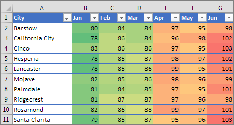
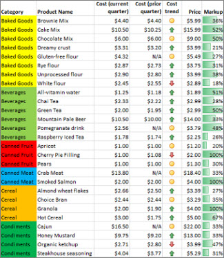

Use conditional formatting to help you visually explore and analyze data, detect critical issues, and identify patterns and trends.
Conditional formatting makes it easy to highlight interesting cells or ranges of cells, emphasize unusual values, and visualize data by using data bars, color scales, and icon sets that correspond to specific variations in the data.
A conditional format changes the appearance of cells on the basis of conditions that you specify. If the conditions are true, the cell range is formatted; if the conditions are false, the cell range is not formatted. There are many built-in conditions, and you can also create your own (including by using a formula that evaluates to True or False).
|
Conditional formatting of monthly record high temperature data for various locations, with colors that correspond to the values in an intuitive way (hotter values are more orange/red, while cooler values are more yellow/green) |
 |
|
Conditional formatting that uses cell background colors to highlight different product categories, a 3-arrow icon set to show cost trends (up, level, down), and data bars to show differences between product mark-ups. |
 |
You can apply conditional formatting to a range of cells (either a selection or a named range), an Excel table, and in Excel for Windows, even a PivotTable report. Note that there are a few extra considerations for conditional formatting in a PivotTable report - see the Apply conditional formatting in a PivotTable report section below on the Windows tab.